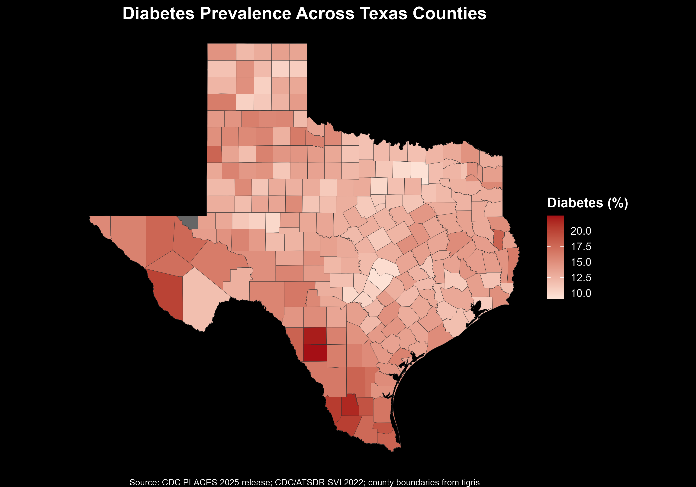

County-Level Public Health and Socioeconomic Risk Modeling
This project analyzes county-level chronic disease risk across Texas using CDC PLACES and Social Vulnerability Index (SVI) data.
The analysis evaluates relationships between diabetes prevalence, obesity, smoking, insurance access, poverty, and broader socioeconomic vulnerability indicators.
View Full Quarto Report
County-level diabetes prevalence across Texas.
Full source code, Quarto reports, regression outputs, and figures are available on GitHub.
View GitHub Repository